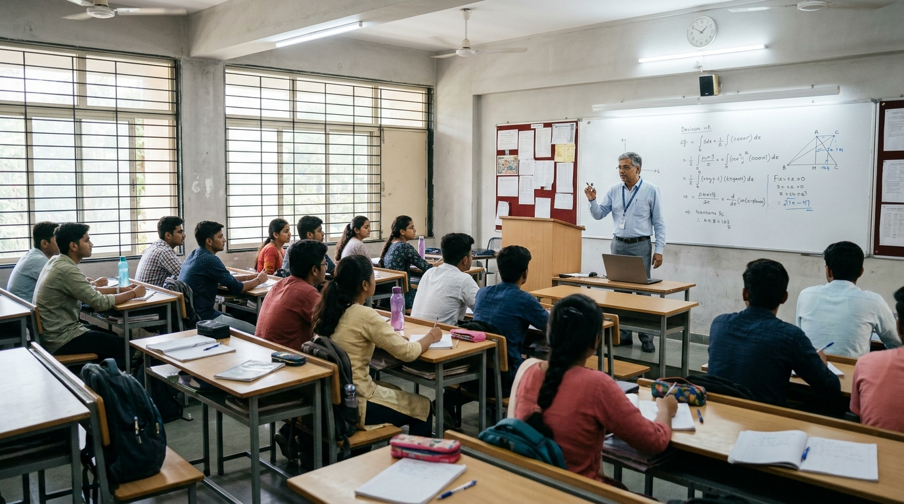
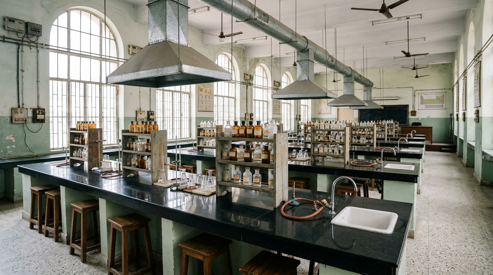
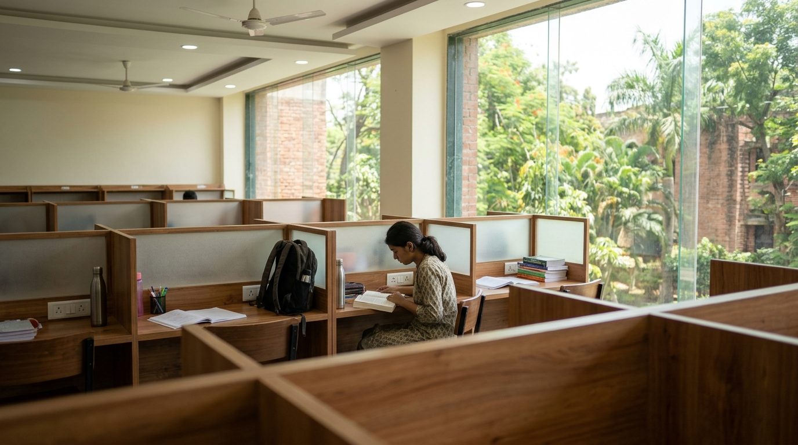

BUILD A STRONG FOUNDATION FOR YOUR FUTURE
Discover the world of Mathematics, Physics and Chemistry through conceptual learning, practical education and a student-focused academic environment.


Empowering Young Minds with Intermediate MPC Education
Intermediate education forms the cornerstone of higher scientific, technological, and engineering studies in India. At our Junior College, we offer a dedicated MPC (Mathematics, Physics, Chemistry) stream structured to provide comprehensive conceptual understanding and rigorous analytical skills.
Our academic model prioritizes concept-based learning over rote memorization. Through structured lectures, practical laboratory engagement, and disciplined study habits, students develop the analytical thinking necessary to transition smoothly from Class 10 to higher academic milestones.
The MPC Subject Trio
A balanced curriculum integrating mathematical precision, physical laws, and chemical sciences.

Mathematics
Develop logical thinking, analytical ability, problem-solving skills, and deep mathematical understanding across algebra, trigonometry, coordinate geometry, and calculus.
Explore Mathematics →
Physics
Understand the fundamental principles of nature, mechanics, motion, energy, electricity, magnetism, optics, and modern physics through rigorous derivations and experimental analysis.
Explore Physics →Chemistry
Explore matter, chemical reactions, periodic elements, thermodynamics, organic reaction mechanisms, and qualitative laboratory testing with real-world applications.
Explore Chemistry →Why Choose the MPC Stream?
Intermediate MPC equips learners with foundational cognitive and analytical tools essential for higher STEM education.
Strong Mathematical Foundation
Cultivates abstract reasoning, spatial visualization, and structured problem solving invaluable across all computational and technical fields.
Scientific Understanding
Helps students deconstruct natural phenomena, formulate hypotheses, and critically analyze empirical observations with scientific discipline.
Practical Laboratory Learning
Hands-on experiments in physics and chemistry bridge textbook principles with verifiable physical outcomes and analytical documentation.
Concept-Based Teaching
Instruction focuses on core derivations, first principles, and progressive problem tiers rather than repetitive memorization.
Academic Mentorship
Continuous academic guidance, doubt resolution sessions, and regular student tracking support every learner's individual pace.
Career Guidance
Structured orientation into diverse higher education pathways, from engineering and architecture to pure sciences and emerging technology.
Our Visual Learning Journey
A structured 6-phase approach designed to instill conceptual mastery throughout the Intermediate years.
Understand the Concept
Deconstruct underlying principles and scientific theories through foundational board lectures and visual demonstrations.
Learn Through Examples
Work step-by-step through representative illustrative problems covering multiple difficulty levels and variations.
Practice Problems
Engage in structured question banks, daily practice worksheets, and independent numerical assignments.
Perform Practical Activities
Conduct hands-on experiments in dedicated laboratories to observe, test, and verify textbook phenomena firsthand.
Revise Important Topics
Systematically revisit key formulas, reaction pathways, and mathematical theorems through planned revision cycles.
Evaluate Academic Progress
Assess understanding through periodic internal assessments, unit tests, and comprehensive preparatory examinations.
Our Learning Environment
Academic spaces curated to foster concentration, collaboration, and practical scientific inquiry.

Smart Classrooms
Well-lit instructional spaces equipped with modern presentation aids and ergonomic seating for engaging academic lectures.

Mathematics Learning
Focused practice halls and geometry model stations encouraging active derivation and peer problem solving.

Physics Laboratory
Fully apparatus-equipped workstations covering optics, mechanics, thermodynamics, and electrical circuits.

Chemistry Laboratory
Equipped with standardized glassware, titration apparatus, fume extraction, and essential safety measures.

Library & Reference Section
Extensive catalog of Intermediate reference textbooks, science journals, question banks, and competitive guides.

Study Areas
Calm, noise-managed zones for quiet revision, structured homework hours, and guided academic doubt clarification.
Comprehensive Student Development
Beyond textbook mastery, we foster essential soft skills and analytical mindsets for lifelong achievement.
Communication Skills
Developing clarity in oral explanations, formal presentation techniques, and precise technical writing for examinations.
Logical Reasoning
Enhancing deductive analysis, identifying mathematical patterns, and structuring evidence-backed conclusions.
Problem-Solving Activities
Engaging in step-by-step problem deconstruction, exploring alternative solutions, and strengthening quantitative acumen.
Scientific Thinking
Cultivating curiosity, rational inquiry, hypothesis formulation, and empirical verification methods.
Time Management
Mastering study scheduling, mock examination timing strategies, and balancing academic targets with personal wellness.
Group Learning
Collaborative peer problem solving, healthy academic discussions, and mutual concept reinforcement.
Academic Activities & Enrichment
Regular events that inspire scientific curiosity and celebrate mathematical creativity.

Science Exhibitions
Student-led working models, experimental setups, and scientific demonstrations.

Mathematics Competitions
Mental arithmetic challenges, problem olympiads, and puzzle-solving contests.

Lab Demonstrations
Faculty-guided live experiments highlighting core principles of light, motion, and compounds.
Educational Workshops
Interactive sessions covering scientific methodology, study skills, and exam strategies.
Pathways After Intermediate MPC
Completing MPC opens a vast spectrum of degree programs and technological careers.
Engineering & Tech
B.Tech / B.E. programs in Computer Science, Mechanical, Civil, Electrical, and Electronics.
Computing & AI
Specialized tracks in Artificial Intelligence, Data Science, Software Systems, and Cybersecurity.
Physical Sciences
B.Sc and Integrated M.Sc degrees in Mathematics, Physics, Chemistry, and Applied Sciences.
Architecture & Defence
B.Arch (Architecture), NDA technical entry, statistics, aviation, and interdisciplinary fields.
* Note: Specific course eligibility and admission requirements vary by university and state/central entrance authorities.
View Full Career Guidance GuideStudent & Parent Perspectives
Illustrative sample reflections demonstrating typical feedback in an Intermediate MPC environment.
"The structured breakdown of First-Year and Second-Year Mathematics helped me transition smoothly from Class 10. The faculty's focus on step-by-step calculus derivations made all the difference."
"Laboratory practicals in physics and chemistry helped clarify concepts that seemed abstract in textbooks. Regular problem-solving sessions built my confidence for board examinations."
"As parents, we appreciate the disciplined academic environment, the focus on conceptual clarity, and the transparent parent-mentor updates throughout the academic term."
YOUR FUTURE STARTS WITH THE RIGHT FOUNDATION
Take the next step towards your academic goals with Intermediate MPC education. Explore our curriculum, visit our illustrative facilities, or submit an admission enquiry today.